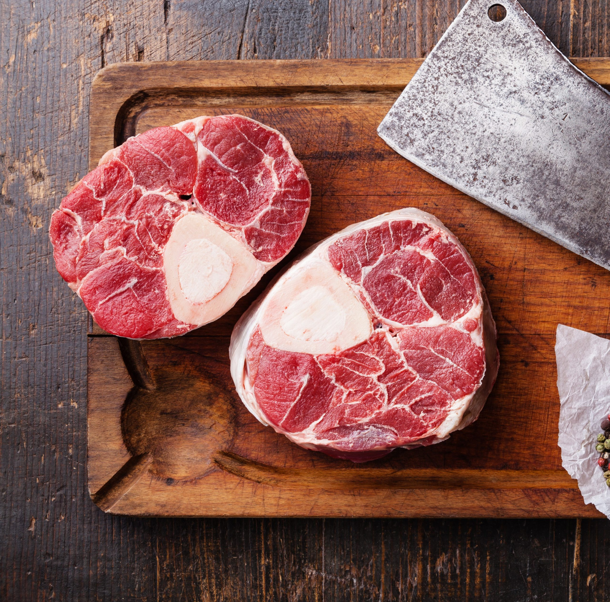

Moroccan inspired slow cooked beef shin

Slow cooked Moroccan inspired beef shin with potatoes
Ingredients:
- 2 pieces of beef shin (preferably on the bone) like image above
- 2 sticks of celery
- 1 large brown onion
- 2 large carrots
- 1 garlic clove
- 4 cloves
- Red wine of your choice (I would recommend a cabernet sauvignon)
- 1 large orange
- 500ml of beef stock
- New potatoes
Steps:
- First we need to make sure the meat is at room temperature before cooking, so take out of fridge for about 10 - 15 minutes.
- Whilst meat is warming, roughly chop the onion, celery and carrots. And chop the garlic into a paste.
- Stick 4 cloves into the orange.
- Sear the meat in a large pan. Once brown all over, take meat out of pan but do not wash the pan. We will use this pan to fry
rest of the incredients.
- Now gently fry the onions, carrots and celery and garlic. Season with salt and pepper.
- Now add the meat back into the pan and add the beef stock and about half a bottle of red wine.
- Add the orange with the cloves.
- Cook on a medium heat for about 2 - 4 hours until meat is tender.
- Serve with new potatoes and veg of choice (I personally recommend tenderstem broccoli)